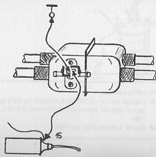
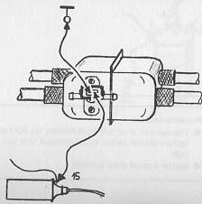
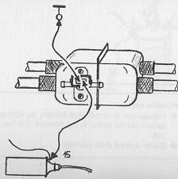

Cold start valve wire detached from terminal 50 of solenoid
Wire detached from thermo-time switch
Cold start valve or thermo-time switch defective
Replace cold start valve or thermo-time switch as necessary

If you have not found any faults so far the trouble involved is not a
typical
cold starting trouble. Continue to find out the trouble with "Engine does not start"
 
